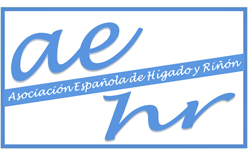

<div class="pages">
  <div data-page="projects" class="page no-toolbar no-navbar">
    <div class="page-content">
    
     <div class="navbarpages">
       <div class="navbar_home_link"><a href="index.html"></a></div>
       <div class="navbar_page_center"><b>AEHR</b></div>
       <div class="menu_open_icon_white"><a href="#" class="open-panel"></a></div>
     </div>
     <div id="pages_maincontent">
      
          <h2 class="page_subtitle">Asoc. Española Hígado y Riñón</h2>
          
              <div class="page_single">
              
              <p style="text-align:justify; font-size:18px; line-height:28px;">
              	La Asociación Española de Hígado y Riñón nace de la necesidad de acercar a hepatólogos y nefrólogos para mejorar los conocimientos que involucran a ambas especialidades y unificar criterios de actuación y aspectos de la práctica clínica. Su fin principal es fomentar la investigación, docencia y formación en el campo de la hepatología y la nefrología.<br /><br />

				La web de la Asociación Española de Hígado y Riñón pretende favorecer la información, comunicación y cooperación entre sus socios, para lo que está en continua actualización con las aportaciones que realizan los mismos.

              </p>
              <div class="clear"></div> 
              <h3>Junta Directiva</h3>
              <blockquote>
              <span>PRESIDENTE</span>
              	<b>Sami Aoufi Rabih</b><br />
                Servicio de Aparato Digestivo<br />
                Complejo Hospitalario La Mancha-Centro<br />
                Alcázar de San Juan (Ciudad Real)
              </blockquote>
              
              <blockquote>
              <span>SECRETARIA</span>
              	<b>Rebeca García Agudo</b><br />
                Servicio de Nefrología<br />
                Complejo Hospitalario La Mancha-Centro<br />
                Alcázar de San Juan (Ciudad Real)
              </blockquote>
              
              <blockquote>
              <span>TESORERO</span>
              	<b>Pedro García Martos</b><br />
                Servicio de Microbiología<br />
                Hospital Universitario Puerta del Mar<br />
                Cádiz
              </blockquote>
              <!--<h3>Smart features</h3>
              <ul class="features_list">
                  <li><a href="photos.html"><span>Photo gallery</span></a></li>
                  <li><a href="blog.html"><span>Blog layout</span></a></li>
                  <li><a href="tabs.html"><span>Responsive tabs</span></a></li>
                  <li><a href="toogle.html"><span>Toogles</span></a></li>
                  <li><a href="#" data-popup=".popup-login" class="open-popup"><span>User login</span></a></li>
                  <li><a href="contact.html"><span>Contact form</span></a></li>
                  <li><a href="#" data-popup=".popup-social" class="open-popup"><span>Social share</span></a></li>
                  <li><a href="#" data-panel="right" class="open-panel"><span>Right slide panel</span></a></li>
              </ul>
              -->
              <div class="clear"></div> 
              <h3>Socios de Honor</h3>
              <ul class="simple_list">
              <li><font style="font-size:16px;">Guillermina Barril Cuadrado</font></li>
              <li><font style="font-size:16px;">Vicente Arroyo Pérez</font></li>
              </ul>
              
              <!--<a href="#" class="button_full">Full width button</a>-->
              </div>
      
      </div>
      
      
    </div>
  </div>
</div>